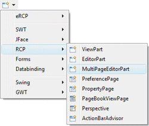
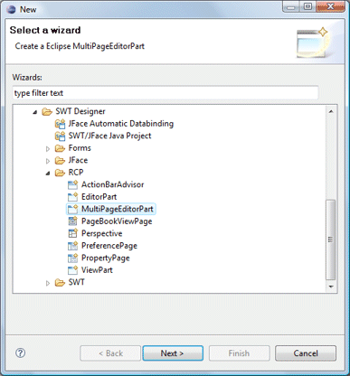
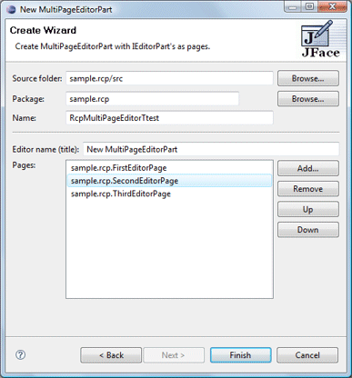

|
Subclasses of the RCP MultiPageEditorPart class can be
created using the RCP MultiPageEditorPart wizard. The wizard can be
selected from the drop down wizard menu or from the
Eclipse New wizard.
To use the wizard, select the project source folder and package to contain the class. Then enter the class name, use the Add button to add individual EditorParts that have already been created, and hit the Finish button. |
|
  |
|
The wizard generates the following code.
|